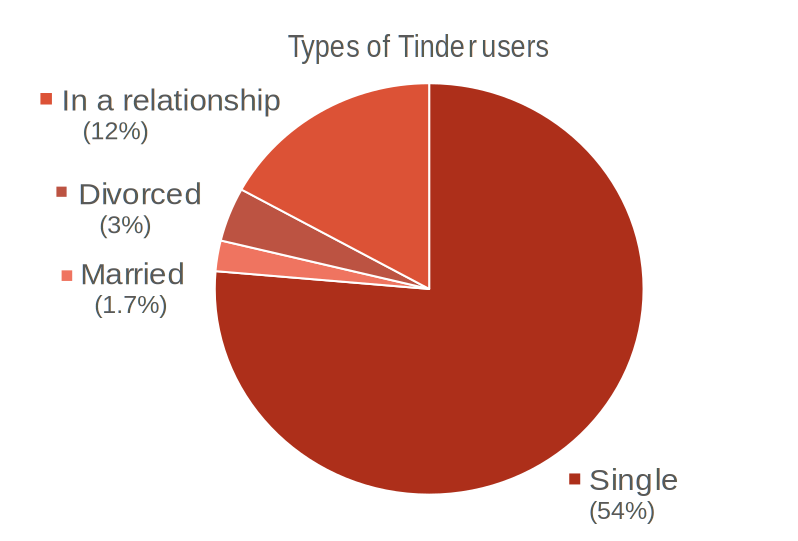

By Kaci Lewandowski
When Tinder began four years ago, no one expected the app to be as popular as it is today. It ranges from ages 16-64, with male and female presence throughout. However, it is not used for the same reasons that your typical dating sites are used for.
Those on Tinder swipe right to those they find attractive, and if the individual on the other end finds them attractive as well - it will be a match. If you come across someone you are not attracted to, you may swipe left and forget you ever saw them in the first place.
Tinder has been know to be a "hook-up" sight, where individuals find others they are attracted to, message them, talk for a little and either forget about them after a few days, or hook-up with them. The term "friends with benefits" has become a standard part of the Tinder experience. Many college students find themselves on Tinder either seeking new friendships, relationships, or FWBs. The amount of millenials on Tinder comes in at 79 percent, so that goes to show you how many are swiping to pass some of their free time.
As of March this year, Tinder has had 10 billion matches in total, 26 million matches made a day, and 50 million users with 10 million being active daily. Wonder what those other 40 million are doing that they can't be 'Tinding.' Speaking of tinding, the daily tinder user spends about 35 minutes a day on the app.
Swipe right --- INTERESTED
Swipe left --- NOT INTERESTED
In the chart shown below, the percentage of Tinder users varies, however, a little more than half of the individuals are single. The 12 percent that are in a relationship may want to reconsider the partnerships they are in considering they are swiping around (and who knows what else) on Tinder.
